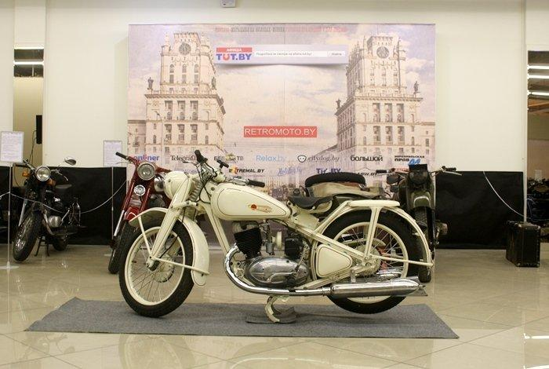

Репортаж с ретро мотовыставки: от первого белорусского мотоцикла «Неман» до армейского Harley-Davidson
На днях свои двери открыла уникальная выставка «Матацыкл на вуліцах Мінска. Гісторыя пра людзей і для людзей». На ней представлено несколько десятков ретромотоциклов — отреставрированных и просто сохраненных в частных коллекциях. Около сорока самых разных мотоциклов: довоенных, времен Второй мировой войны, послевоенных, советских, французских, итальянских... Есть даже первые белорусские «Неман». Все это собрано на третьем этаже торгового центра «Скала». Но выставка не только про технику...
Подробнее14 мая 2017
Отреставрированный мотоцикл Victoria K35 1935

Первые двухколесные моторизованные транспортные средства появились в конце 19-го века. Мотоциклы быстро стали частью современного общества и выпускаются больше столетия. В наши дни старая техника имеет достаточно высокую ценность, особенно это касается редких моделей. Многие старинные мотоциклы сгнивают на свалке, но некоторым везет больше, и они становятся частью коллекций или выставочными экспонатами. Горстке ретро мотоциклов везет еще больше. Их реставрируют, чтобы ездить...
Подробнее10 апреля 2017
70-летняя годовщина Урала
Многие производители мотоциклов изо всех сил стремятся к прогрессу. И в этом стремлении они стирают связь между райдером и байком. С одной стороны добавляется мощность, но с другой стороны – отнимается возможность ее контролировать, оставляя это на электронику. Но Урал выбрал проверенный годами путь. Оригинальный дизайн, основанный на BMW, просуществовал уже десятки лет, но тщательно обновлен с помощью современных деталей (сюда входят вилки Marzocchi, амортизаторы Sachs и тормоза Brembo)...
Подробнее1 марта 2017
Ретро мотоцикл BMW R60/2 Steib S350
На протяжении всей истории немецкие мотоциклы были вершиной новых технологий. История мотоциклов BMW начинается в 1921 году, с производства двигателей для других компаний. Первый мотоцикл BMW R32, был выпущен в 1923 году под брендом Bayerische Motoren Werke AG. Я еще не встречала ни одного человека которому не нравились бы мотоциклы BMW! R32 стал основой для всех последующих мотоциклов BMW, где был новый оппозитный двигатель с головками цилиндров проектированных...
Подробнее21 января 2017
Kawasaki W650 Custom
Иногда интересно посмотреть на мотоциклы из «реального мира», как, например, этот Kawasaki W650, принадлежащий Джерому Пьеру (Jérôme Pierre), ведущему французский мото-блог «Un Pneu Dans La Tombe». Этот W650 – попытка Джерома персонализировать и улучшить байк, не нарушая при этом уровень его надежности. Он немного понизил переднюю подвеску и установил новые пружины. Сзади Джером поменял амортизаторы на Hagon. Покрышки у этого байка — Dunlop K81 TT100, первые покрышки, которые...
Подробнее16 декабря 2016